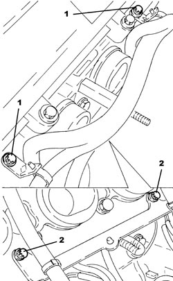
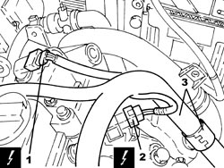
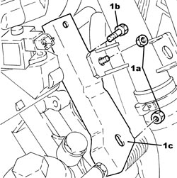
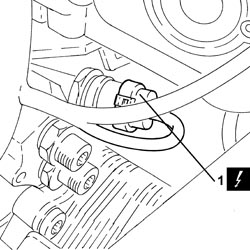
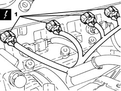
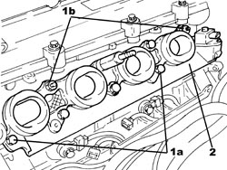
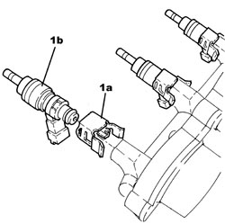
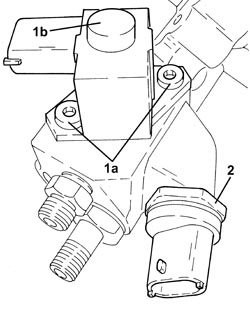
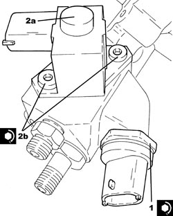
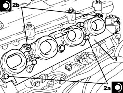

1072B21 AIR INTAKE FUEL MANIFOLD INTERGRATED DUCT R R AND REPLACE GASKET
- Path
- Procedures > 10 ENGINE > 1072 INLET AND EXHAUST MANIFOLDS > 1072B INLET MANIFOLDS > 1072B21 AIR INTAKE FUEL MANIFOLD INTERGRATED DUCT R R AND REPLACE GASKET
- Kind
- repair procedure (removal / refitting; the operation number is the code)
- Applies to
- engines: 1.9 JTS, 2.2 JTS; all production periods
- Interactive page
- https://sloeber94.github.io/elrnDB/#/939010590
Applies to: engines: 1.9 JTS, 2.2 JTS; all production periods
 Removing
Removing
 Refitting
Refitting- Make sure that the ignition key is in the OFF position, then disconnect the battery terminal (-).
Description | Connector | |
|---|---|---|
- | Battery |
Op. 1048A34 SLEEVE(S) FROM FLOW METER TO AIR SUPPLY CAPACITY CASE - R + R
Op. 1056F17 THROTTLE BODY WITH DVL R R
Op. 1072B50 AIR CHAMBER - R.R.
Op. 1072B54 HOSES CONNECTING AIR INTAKE CHAMBER TO INTAKE MANIFOLD(S) - R.R.
1. Undo the bolts fixing the electrical wiring mounting bracket to the cylinder head.
2. Undo the bolts fixing the electrical wiring mounting brcket to the air intake/fuel manifold duct.

Applies to: engines: 1.9 JTS, 2.2 JTS; all production periods
1. Disconnect the electrical connection from the fuel pressure regulator on the pressure pump.
Description | Connector | |
|---|---|---|
1 | Exhaust side timing sensor |
2. Disconnect the electrical connection from the fuel pressure regulator on the air intake/fuel manifold duct.
Description | Connector | |
|---|---|---|
2 | Fuel pressure regulator |
3. Release the electrical wiring from the band.

Applies to: engines: 1.9 JTS, 2.2 JTS; all production periods
1. Undo the nuts (1a) and the bolt (1b) and remove the electrical wiring mounting bracket (1c).

Applies to: engines: 1.9 JTS, 2.2 JTS; all production periods
Op. 5530B52 BATTERY SUPPORT/DRIP TRAY - R.R
Op. 1056F74 LOW PRESSURE PIPE TO FUEL PRESSURE PUMP R R
Op. 1056F76 HIGH PRESSURE PIPE FROM PRESSURE PUMP TO SINGLE FUEL MANIFOLD PIPE R R
1. Disconnect the electrical connection from the fuel pressure sensor.
Description | Connector | |
|---|---|---|
1 | Fuel pressure sensor |

Applies to: engines: 1.9 JTS, 2.2 JTS; all production periods
1. Disconnect the electrical connections from the injectors.
Description | Connector | |
|---|---|---|
1 | Injector |

Applies to: engines: 1.9 JTS, 2.2 JTS; all production periods
1. Undo the bolts (1a) and the nuts (1b) fixing the air intake/fuel manifold duct.
2. Remove the air intake/fuel manifold duct complete with injectors, fuel pressure regulator and fuel pressure sensor.
- Remove the gasket.

Applies to: engines: 1.9 JTS, 2.2 JTS; all production periods
1. At the bench, remove the clip (1a) and release the injectors (1b) from the air intake/fuel manifold duct.

Applies to: engines: 1.9 JTS, 2.2 JTS; all production periods
1. Undo the bolts (1a) and remove the fuel pressure regulator (1b) from the air intake/fuel manifold duct.
2. Undo and remove the fuel pressure regulator from the air intake/fuel manifold duct.

Applies to: engines: 1.9 JTS, 2.2 JTS; all production periods
Refitting
Removing1. Place the fuel pressure sensor in its housing on the air intake/fuel manifold duct and tighten it to the recommended torque.
Component | Fastening | dia | Value (daNm) | Validity |
|---|---|---|---|---|
Fuel pressure sensor | - | M12 | (air intake/fuel manifold integrated duct side) 2.0 | 1.9 JTS 2.2 JTS |
2. Place the fuel pressure regulator (2a) in its housing and secure it by tightening the bolts (2b) to the recommended torque.
Component | Fastening | dia | Value (daNm) | Validity |
|---|---|---|---|---|
Fuel pressure regulator | Bolt | M12 | (air intake/fuel manifold integrated duct side) 2.0 | 1.9 JTS 2.2 JTS |

Applies to: engines: 1.9 JTS, 2.2 JTS; all production periods
- Replace the seal on the injectors.
- Place the injectors in their seats on the air intake/fuel manifold duct and secure them using the clips.
- Place the seal for the air intake/fuel manifold duct in its housing.
1. Place the air intake/fuel manifold duct complete with injectors, fuel pressure regulator and fuel pressure sensor back in its housing.
2. Tighten the bolts (2a) and the nuts (2b) fixing the air intake/fuel manifold duct to the recommended torque.
Component | Fastening | dia | Value (daNm) | Validity |
|---|---|---|---|---|
Air intake/fuel manifold integrated duct | Bolt/nut | M8 | (cylinder head side) 1.8 - 2.2 | 1.9 JTS 2.2 JTS |

Applies to: engines: 1.9 JTS, 2.2 JTS; all production periods
- Connect the electrical connections to the injectors.
- Connect the electrical connection to the fuel pressure sensor.
Op. 1056F76 HIGH PRESSURE PIPE FROM PRESSURE PUMP TO SINGLE FUEL MANIFOLD PIPE R R
Op. 1056F74 LOW PRESSURE PIPE TO FUEL PRESSURE PUMP R R
Op. 5530B52 BATTERY SUPPORT/DRIP TRAY - R.R
- Place the electrical wiring mounting bracket in its housing and secure it using the bolt and the nuts.
- Secure the electrical wiring using the band.
- Connect the electrical connection to the fuel pressure regulator on the air intake/fuel manifold duct.
- Connect the electrical connection to the fuel pressure regulator on the pressure pump.
- Tighten the bolts fixing the electrical wiring mounting brcket to the air intake/fuel manifold duct.
- Tighten the bolts fixing the electrical wiring mounting bracket to the cylinder head.
Op. 1072B54 HOSES CONNECTING AIR INTAKE CHAMBER TO INTAKE MANIFOLD(S) - R.R.
Op. 1072B50 AIR CHAMBER - R.R.
Op. 1056F17 THROTTLE BODY WITH DVL R R
Op. 1048A34 SLEEVE(S) FROM FLOW METER TO AIR SUPPLY CAPACITY CASE - R + R
- Connect the negative battery terminal.
Topics linked from this page (13)
- 1048A34 SLEEVE(S) FROM FLOW METER TO AIR SUPPLY CAPACITY CASE - R + R
- 1056F17 THROTTLE BODY WITH DVL R R
- 1056F74 LOW PRESSURE PIPE TO FUEL PRESSURE PUMP R R
- 1056F76 HIGH PRESSURE PIPE FROM PRESSURE PUMP TO SINGLE FUEL MANIFOLD PIPE R R
- 1072B50 AIR CHAMBER - R.R.
- 1072B54 HOSES CONNECTING AIR INTAKE CHAMBER TO INTAKE MANIFOLD(S) - R.R.
- 5530B10 BATTERY - R+R
- 5530B52 BATTERY SUPPORT/DRIP TRAY - R.R
- A001 BATTERY
- K083 FUEL PRESSURE SENSOR
- K107 EXHAUST SIDE TIMING SENSOR
- N070 INJECTOR
- N077 FUEL PRESSURE REGULATOR